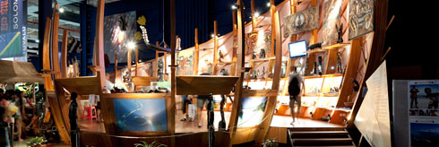

Expo-Pacificocean

The Pacific pavilion is the third largest Pavilion at Expo 2010 after China and the African Joint pavilion. The Pavilion includes 15 pacific island countries and 2 tourism organizations, is one of the most characteristic pavilion of 11 joint pavilions in Sshanghai Eexpo 2010.
The Pacific Pavilion’s theme for Expo 2010 is ‘Pacific - an inspiration to cities’. Compare with other modern and electrical themed pavilions, Pacific Pavilion adopted a nature beauty concept. Cotton and linen fabric, manual sculpture and hand-painted design were used extensively for decoration, shows the Pacific island countries’ beautiful natural landscape, and the unique cultural environment and enthusiasm feelings; The colored epoxy floor paint through special process not only shorten the construction time scale, but perfectly draws the outline of sea blue tone throughout. Building facade decoration with the hand painted underwater world picture, receives high praise from the visitors.
The pavilion includes 15 round steel structured with nature wooden finished stands representing 15 pacific island countries, and one sales booth, external landscape areas and offices. The total size of the pavilion exceeds 8,100 square meters.
There’s a comprehensive stage outside the pavilion for the events operating during the 184 days period, which mainly display the island country’s sustainable lifestyle of natural scenery, profound cultural foundation, human and nature harmonious coexistence, and provide inspiration to create a city. In 184 days operation period, it receives more than seven million visitors.
Nomura Construction was appointed as the Design, Build and Operation Contractor in June 2009. The concept design was developed by XXXX, and Nomura design team carried the Concept through the Scheme Design to final Construction Design. Work with xxxx, Nomura design team using their rich experiences help realizing the Pacific Concept in Shanghai China, the scheme design and construction design were reviewed with our unique Buildability Analysis Tools, focus on construction techniques, programme and cost impact of the design. As a result, the design team won a Gold Award as one of the best theme development and creative display pavilion by the Expo Organizer.
One of the biggest challenges was to coordinate 15 countries under the one roof with one deadline that cannot be moved. Nomura’s project manager took lead in coordination, we made sure all ideas were heard and coordinated; concerns were taken into account when developing design, at construction phase and finally operating the pavilion. The customer total satisfaction is always the top goal for Nomura Construction.
With a tight deadline that cannot be moved, Nomura Construction overcame some major constrains and delivered project on time, within the budget. The project team fully engaged on all project activities, we facilitated import process for some of the long lead items which directly purchased by client. Activities like this have largely reduced overall construction period and bought sufficient time for venue commissioning and operational training. Pacific Pavilion was one of the first group pavilions that officially opened for Expo Park readiness trial run despite been the third largest pavilion in the park.
Nomura is actively promoting Sustainable Construction in the Chinese build industry. To reflect the concept of the Pacific Pavilion, a large number of green plants were designed to create a tropical island natural alike in-door landscape environment. Under Nomura Construction’s Sustainability Policy, more than 80% of the greens used were real plants and maintained throughout 183 days of operation period. This is just a example that how Nomura adopt sustainability policy in their design, construction and operation process.
Project Safety factors were reviewed according to Nomura Construction Safety Policy, safety risks were identified from design stage and recorded in the design risk register. The register than handed over to the construction team and transferred to the operation team, and finally the client once project completed. There were 16 islanded platforms in the pavilion representing 15 counties and 1 tourism organisation. Initial design indicated the platforms finished with natural wood with wooden supporting structure. Design team identified that there was a risk of safety considering the number of visitors forecasted. Work with construction team, the design team took decision changed supporting structure to steel frame; as a result more than 300 ton steel were used constructing platform bases to mitigate the safety risk. Together with operation period, the project achieved zero safety incident throughout the project lifecycle.
Nomura Construction, teamed up with Aixisi?, was is also responsible for the 184 days pavilion operation and management, at peak time it employed 150 staff as the operation team. The operation covers all function areas, including manage performance stage, pavilion shop operation, facility management, security, daily clearing team, and also organizing 15 National Day activities for the members of the Pacific Pavilion. The operation bought a huge success to the Pavilion; it attracted a total of 7 million visitors, as one of the most popular pavilion in the Expo Park.
 Top
Top